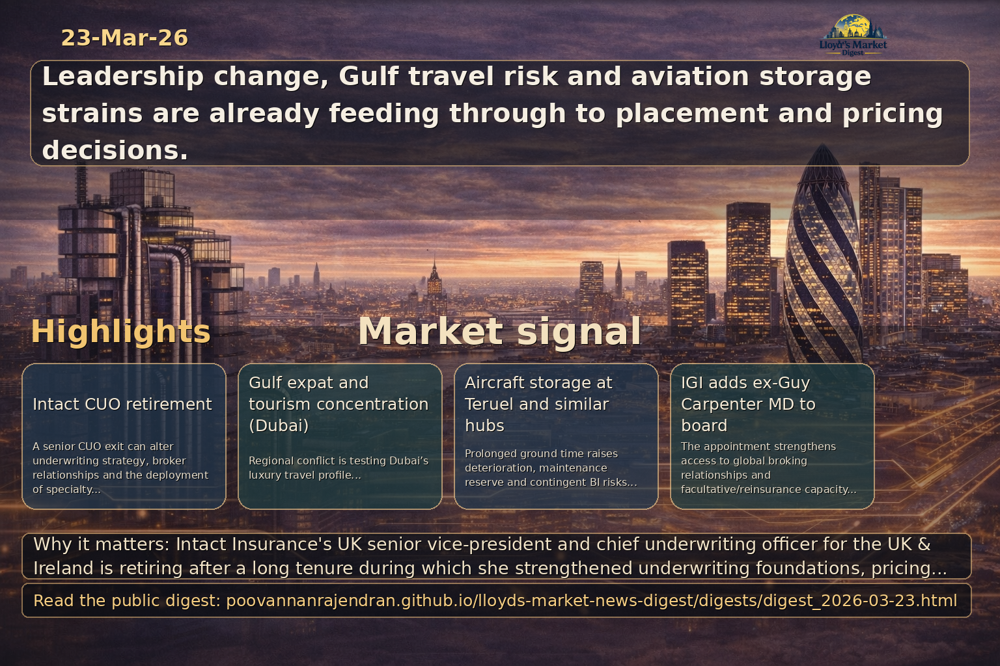

Executive summary
Intact Insurance's UK senior vice-president and chief underwriting officer for the UK & Ireland is retiring after a long tenure during which she strengthened underwriting foundations, pricing, data and risk-consulting capabilities. For Lloyd's market participants, global specialty carriers, brokers, syndicates and placement platforms this leadership change merits close attention: it may affect underwriting appetite, distribution relationships and the pace of digital and data-driven initiatives.…
View LinkedIn Visual Summary

Generated from the same day's LinkedIn digest text.
Key themes
- Leadership transition and succession risk
- Underwriting appetite and pricing continuity
- Distribution and broker relationship stability
- Data, pricing and placement platform momentum
- Talent mobility and strategic acquisition opportunities
- Geopolitical shock to Gulf travel hubs and concentration of hospitality exposures
Source: insurancejournal.com
Why it matters: Dubai’s positioning as a tax‑free, luxury hub for British expatriates and inbound tourism is being tested by regional conflict, creating concentrated exposures across hospitality, leisure, personal lines and event cancellation that are highly relevant to Lloyd’s syndicates and specialty brokers.
- Hospitality and travel disruption: surge in cancellations, non‑appearance and event cancellation claims increases short‑tail exposure and reconciliation workload for syndicates and MGAs.
- High‑net‑worth and personal lines concentration: relocations and second‑home ownership in the Gulf create potential coverage gaps for political violence/evacuation, requiring bespoke placements and enhanced advisory from brokers.
- Placement and appetite implications: syndicates will likely reprice or restrict war/peril cover for the region; brokers and digital placement platforms must prepare alternative structures (short‑term facultative, layered reinsurance, parametric triggers).
Source: insurancejournal.com
Why it matters: The renewed use of storage hubs such as Teruel and widespread airspace closures illustrate operational aviation stresses that translate into increased physical damage, maintenance reserve and contingent liabilities—issues that affect aviation underwriters, reinsurers and brokers negotiating war and political violence wording.
- Aircraft hull and storage exposure: prolonged ground time in storage increases risk of deterioration, corrosion and maintenance deficits, elevating physical damage claims and recovery costs for hull underwriters.
- Operational and supply‑chain disruption: rerouted flights and constrained jet fuel supply raise AOG, increased liability exposures and frequency of contingent business interruption claims, pressing syndicates for clear policy wordings.
- Market and placement consequences: upward pressure on war‑risk and P&V pricing and potential capacity withdrawal; brokers must use placement platforms and facultative arrangements to secure cover and advise on sanctions/compliance implications.
Source: insurancetimes.co.uk
Why it matters: A senior CUO exit in the UK & Ireland market can alter underwriting strategy, broker relationships and the deployment of specialty capacity; Lloyd’s syndicates, global specialty carriers, brokers and placement platforms need to assess continuity risks and commercial openings.
- Underwriting and pricing continuity: Change in CUO leadership can lead to shifts in risk appetite or repricing; syndicates and brokers should prepare for re-underwriting of lines and revisit submission strategies.
- Broker and distribution implications: Brokers require early reassurance on coverage terms and decision-making continuity; digital placement platforms can position themselves as stability providers during the transition.
- Talent and commercial opportunity: Succession creates recruitment and M&A opportunities — market players can target incoming talent or strengthen partnerships around Intact’s enhanced pricing, data and risk-consulting capabilities.
Source: reinsurancene.ws
Why it matters: Appointment of a former Guy Carpenter MD to IGI's board materially strengthens IGI's connectivity to global reinsurance broking networks and capital markets, enhancing its ability to secure capacity and structure specialty reinsurance solutions attractive to brokers and Lloyd's counterparties.
- Improves access to global broking relationships and facultative/reinsurance capacity, easing placement for complex specialty lines and reducing friction for brokers.
- Raises governance and market credibility at board level, which can accelerate strategic partnerships with syndicates and encourage platform-led placements.
- Signals potential focus on structured reinsurance and alternative capital solutions, prompting brokers and Lloyd's syndicates to reassess appetite and counterparty engagement strategies.
Source: reinsurancene.ws
Why it matters: QBE's appointment of a Transactional Liability Lead in Asia demonstrates insurer commitment to scaling M&A insurance capability regionally, with direct consequences for broker distribution, placement speed and the allocation of capacity by Lloyd's syndicates and global carriers.
- Expands underwriter expertise and regional decision-making for M&A placements, improving speed-to-bind and making Asia-originated transactional liability business more attractive to brokers.
- Increases supply of insurer-led transactional liability capacity, intensifying competition and creating opportunities for layered solutions involving Lloyd's syndicates and global reinsurers.
- Encourages closer coordination between brokers, regional insurer teams and placement platforms to handle complex multi-jurisdictional deals, potentially accelerating adoption of digital placement workflows.